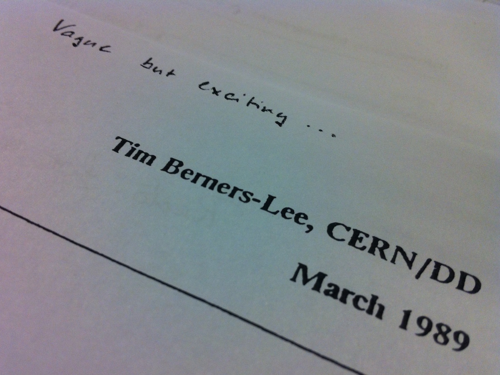
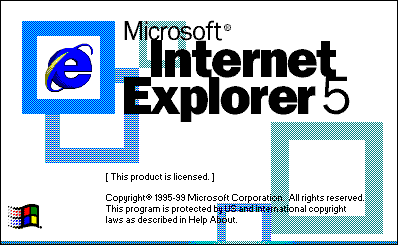

SGML 1986
Er word vaker gedacht dat HTML de eerste opmaaktaal was die werd gebruikt. Maar wetenschappers waren al langer bezig met het delen van documenten geschreven in een smaak van SGML. Tim Berners gebruikte het als startpunt voor zijn nieuwe markup-taal. SGML is op zichzelf geen documenttaal, maar een beschrijving van hoe u er een moet opgeven. Het zijn metadata.

WWW 1989
Tegen het einde van de jaren 80 was Tim Berners-Lee klaar om het netelige probleem van informatiebeheer op grotere schaal aan te pakken. Zijn leidinggevende, Mike Sendall, zag het potentieel van het idee en gaf groen licht door de woorden “vaag maar opwindend” langs de bovenkant van het papier te vegen . Dat voorstel zou het World Wide Web worden .
NeXTSTEP 1989
NeXTStep is een objectgeoriënteerd, multitasking besturingssysteem ontwikkeld door Steve Jobs' bedrijf NeXT. Het besturingssysteem van de Apple Macintosh, Mac OS X, is een directe afstammeling van NeXTStep. Steve Jobs vestigde het bedrijf NeXT na zijn vertrek bij Apple in 1985 en begon de werkstations NeXTcube en NeXTstation te ontwikkelen. Apple kocht NeXT op 4 februari 1997 voor 429 miljoen dollar, waarna Jobs terugkeerde bij Apple.

ALIWEB 1994
Slechts 2 jaar na de lancering van het World Wide Web, maakten we kennis met ALIWEB! ALIWEB wordt beschouwd als de eerste zoekmachine voor internet. Ze zijn in november 1993 voor bedrijven geopend en bieden gebruikers nuttige links naar de beste inhoud op internet. In slechts 2 jaar begin je te zien hoe design tot leven komt.
CSS 1996
Vanaf het begin van het wereldwijde web heeft elke browser zijn eigen interne stylesheet gehad, die ervoor zorgde dat de tags in een document werden geïnterpreteerd. Het concept van cascading style sheets werd in 1994 voorgesteld door de Noor Håkon Wium Lie. Samen zetten ze in op het creëren van een syntaxis die krachtig genoeg zou zijn om te voldoen aan de eisen van ontwerpers, terwijl ze eenvoudig genoeg blijven om snel te leren. Ze zijn erin geslaagd.

HTTP 1997
De term hypertekst is bedacht door Ted Nelson , een visionaire computerwetenschapper die werkte aan zijn eigen hypertekstsysteem genaamd Xanadu. Zowel Ted Nelson als Tim Berners-Lee werden beïnvloed door de ideeën van Vannevar Bush in zijn cruciale essay van 1945, As We May Think

HTML 1997
HyperText Markup Language (afgekort HTML) is een op SGML gebaseerde opmaaktaal voor de specificatie van documenten, voornamelijk bedoeld voor het wereldwijde web. De eerste versie van HTML bevatte een totaal van 21 elementen. Veel van deze elementen zijn nog steeds bij ons vandaag- TITLE, P, UL, LI, H1, H2, enz.
Internet Explorer 5 1999
Het tij begon te keren met de lancering van Internet Explorer 5 voor de Mac, een browser die werd geleverd met indrukwekkende CSS- ondersteuning. Als dit de toekomst van webdesign was, zou het leven veel productiever en creatiever worden..
